EdTech · Design de Produto Ponta a Ponta · Somos Educação
Boletim+: ajudando escolas a planejar melhor, não mais difícil
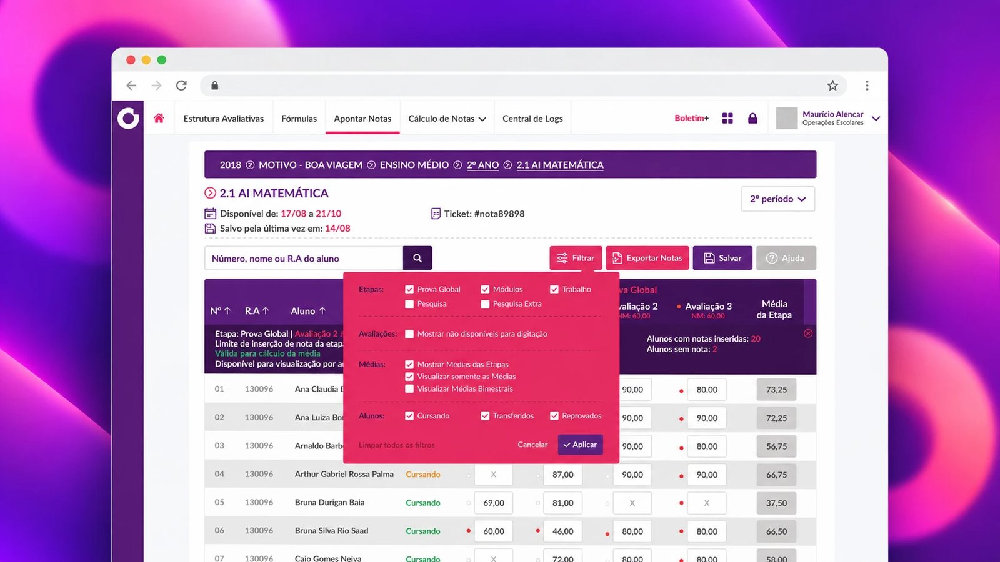
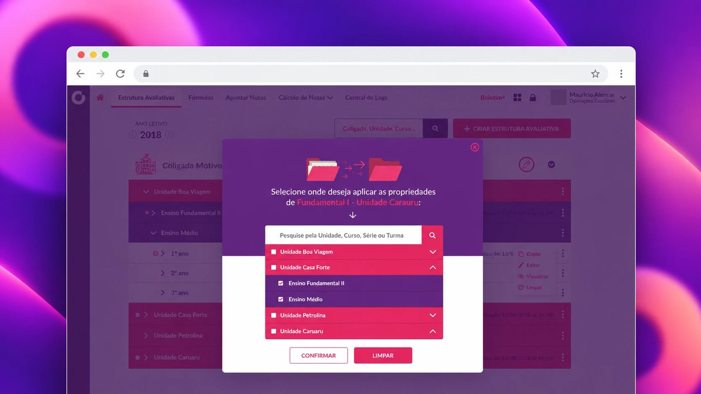
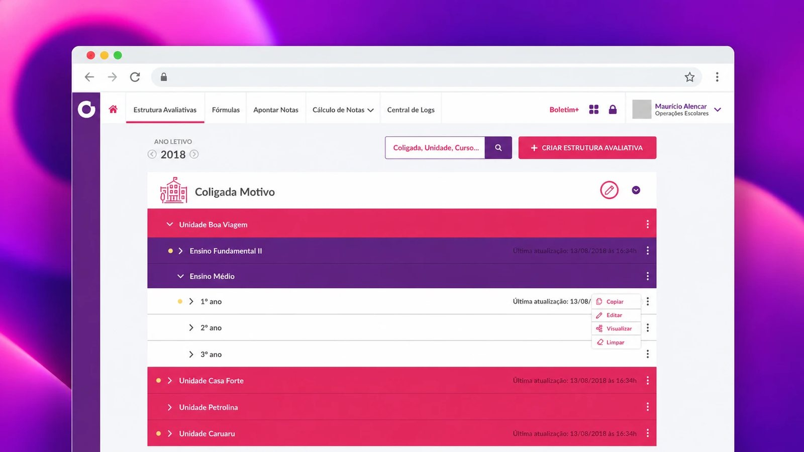
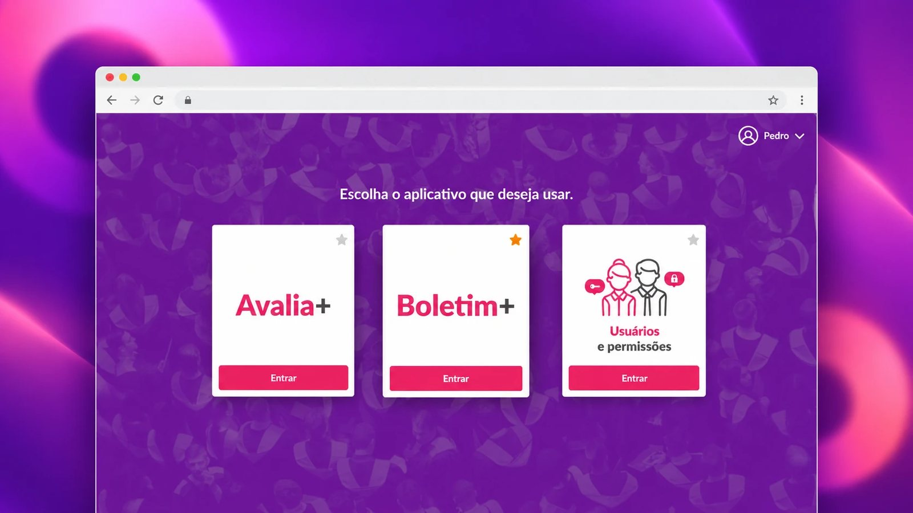
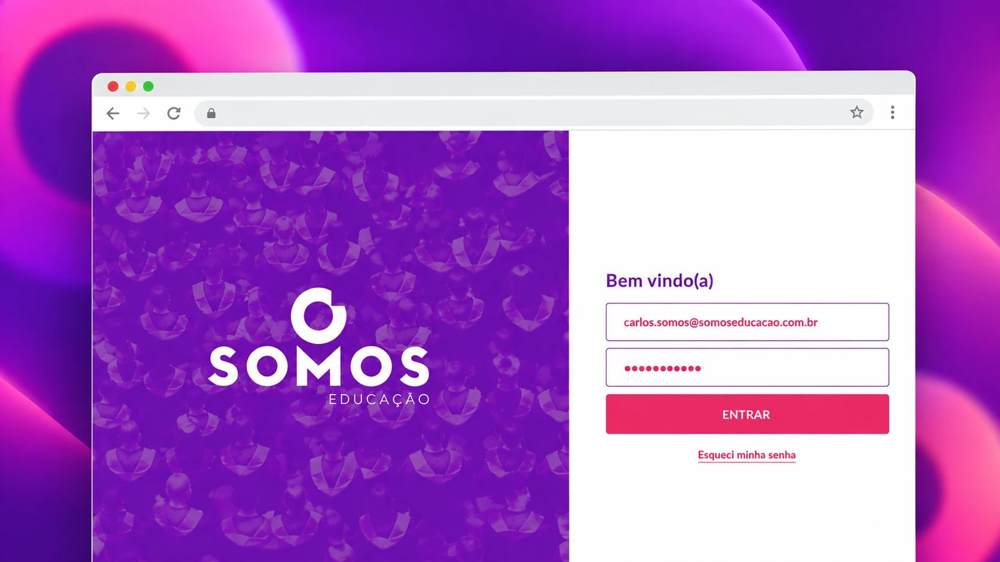
Visão Geral
Uma plataforma para professores que nunca pediram para virar experts em planilhas
Boletim+ é um produto da Somos Educação que ajuda professores e coordenadores a planejar o ano acadêmico, dar notas aos alunos e calcular suas médias. Muitos dos usuários são pessoas com pouco conhecimento técnico, que agora podem criar sua programação letiva com muito mais facilidade.
Entrei como o designer de produto, liderando o processo da descoberta até as telas finais e o design system — trabalhando de perto com POs, desenvolvedores e stakeholders das escolas durante todo o projeto.
Problema
Entendendo o problema
Somos Educação é uma empresa que gerencia muitas escolas ao redor do Brasil. É difícil ajudar cada escola individualmente em seus respectivos anos acadêmicos, pois cada uma possui estruturas diferentes.
Outros problemas incluíam o uso de planilhas externas, perda de informações, falta de rastreamento da informação e a necessidade de ter um panorama geral do processo acadêmico.
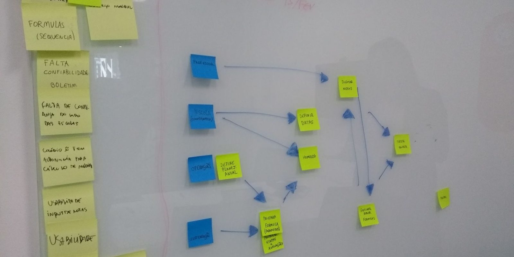
Objetivos
Objetivos do produto
Uma vez que entendemos os problemas, tivemos em mente os objetivos que queríamos alcançar com o produto.
Pesquisa
Pesquisa
Junto com outros membros do time, como POs, desenvolvedores e stakeholders, começamos o processo de discovery do produto para entender como as jornadas aconteciam. Usamos métodos de pesquisa para saber como nossos usuários trabalhavam, quais softwares usavam, quais estruturas precisavam criar e as dificuldades que cada persona tinha, além de outros produtos e recursos que poderiam ser úteis no processo.
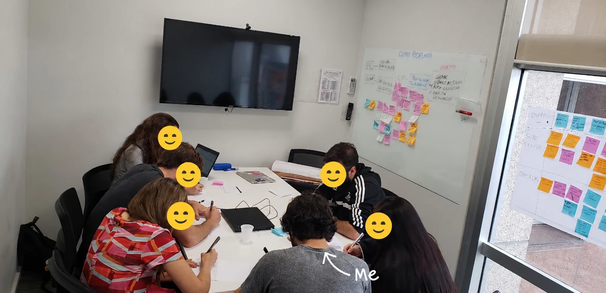
Jornadas
Jornadas
Criamos as jornadas de uso para entender onde nossa plataforma poderia atender as necessidades dos usuários, e até identificar oportunidades futuras para outros produtos.
Isso permitiu:
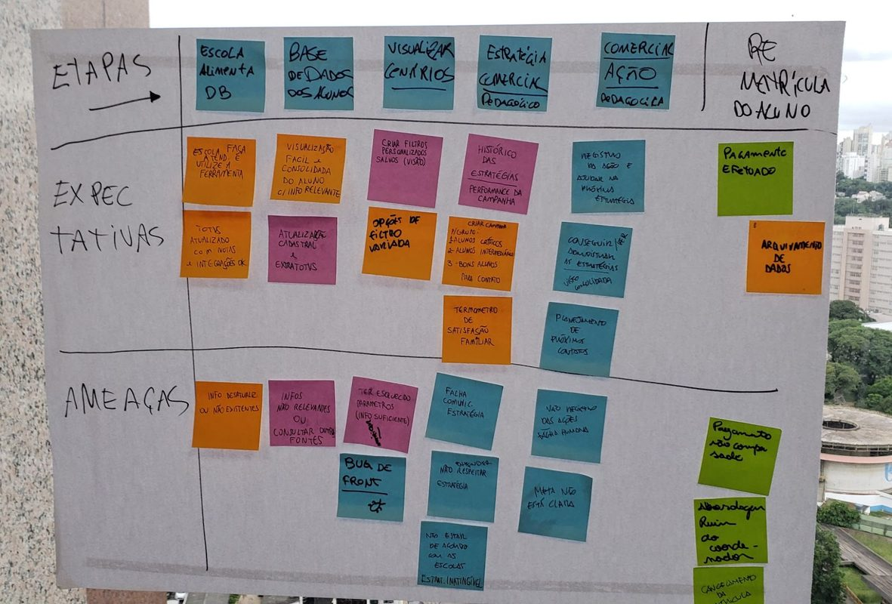
Wireframes
Wireframes e Protótipos
Após o estágio inicial de Descoberta do Produto, era hora de criar os primeiros protótipos e apresentá-los às partes interessadas para obter feedback.
Acho importante divergir bastante nessa etapa e procurar soluções e jornadas diferentes.
Também os apresentamos às escolas, para que avaliassem nossas ideias, o que nos permitiu trabalhar com mais eficácia nas próximas etapas.
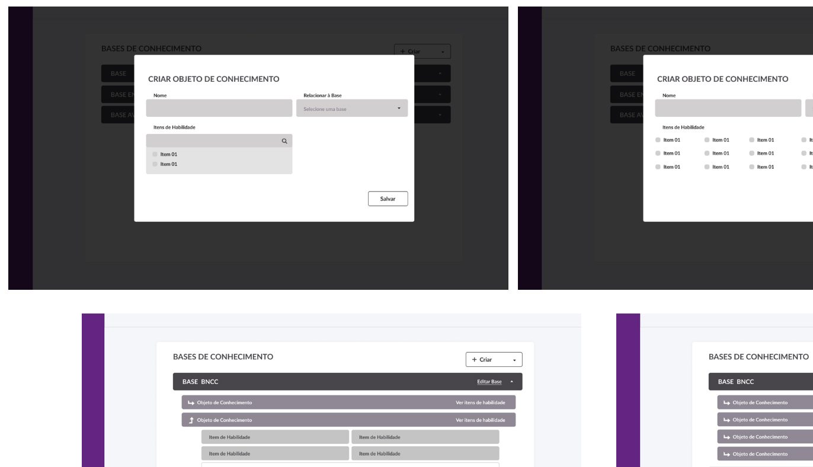
Protótipos finais
Protótipos finais
Quando chegou a hora das telas, comecei a criar a identidade visual e os primeiros componentes usando o Figma.
Principais pontos:
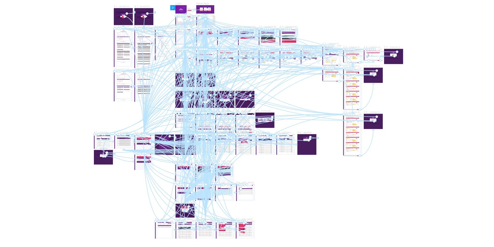
Visual Design
Visual Design
Botões, cores e componentes de interface criados para o Boletim+.
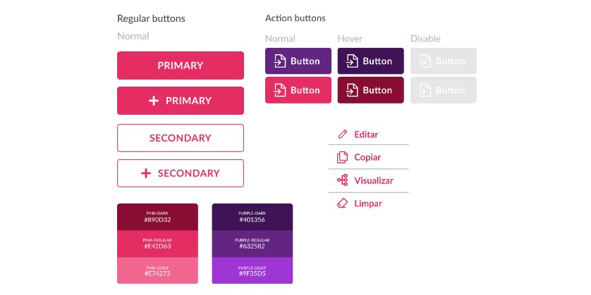
Design System
Design System
A empresa só possuía documentação para cores e tipografia, então criei todos os componentes e estabeleci como eles se comportariam.
Como havia novos produtos a serem criados posteriormente, também comecei a criar um Design System chamado Apollo.
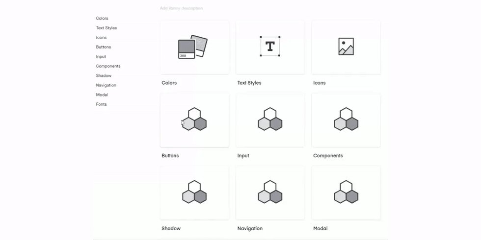
Entregas e testes
Entregas e testes
Após o lançamento da primeira versão da plataforma, continuamos recebendo feedback dos usuários para melhorar e monitorar o desempenho da plataforma.
Também acompanhei os desenvolvedores para responder a perguntas e fazer testes conforme as telas eram criadas e lançadas.
O que eu aprendi
Medindo sucesso
Medindo sucesso
Os resultados após o lançamento da plataforma: